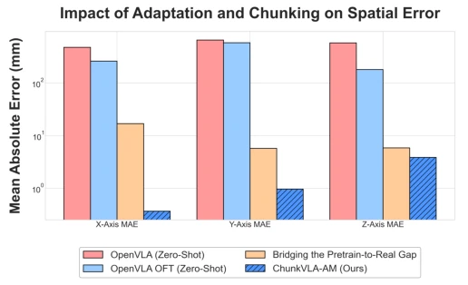
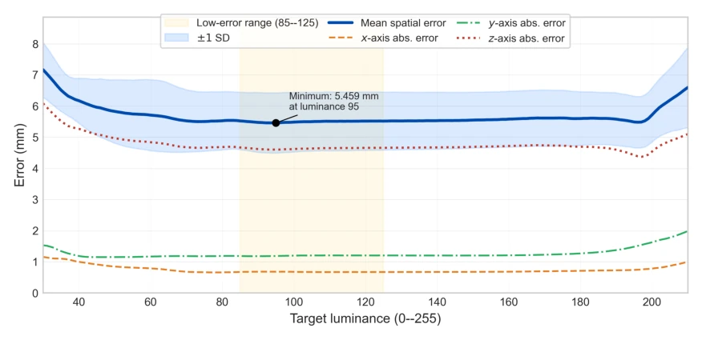
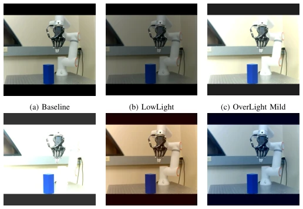

Fig. 1. Cloud-edge deployment architecture. The local FR3 client sends instruction-conditioned RGB observations to a remote OpenVLA-OFT service, receives an action chunk, and validates commands before execution.
实验Experiments
在 42 次物理 A-B 传递试验中，红蓝目标各 21 次。系统成功 39 次，成功率 92.9%。失败案例均发生在 B 点放置阶段，因释放高度控制不足导致物体倾倒。轨迹评估显示，ChunkVLA-AM 的 MAE 为 1.74mm，显著优于 Zero-shot 的 179mm 和单步微调 [24] 的 9.5mm。光照敏感性测试发现，平均亮度在 85-125 区间内误差最低，过暗（30）或过曝（210）会导致 Z 轴误差激增。这表明虽然 Chunking 改善了时序一致性，但单目视觉在极端光照下仍存在鲁棒性瓶颈。
—

Fig. 2. Trajectory tracking comparison across adaptation methods. The y- axis uses a logarithmic scale to highlight the significant precision gains. ChunkVLA-AM achieves sub-millimeter lateral accuracy, outperforming both zero-shot models and single-step fine-tuned baselines.

Fig. 3. Trajectory prediction errors across ten luminance-sweep trials. The solid curve and surrounding band show the across-trial mean spatial error and ±1 standard deviation, respectively. The remaining curves show the axis-wise MAEs. The highlighted range from 85 to 125 indicates a low-error region centered around the minimum error observed at luminance 95.

Fig. 4. Representative FR3 workspace captures under six illumination conditions used in the lighting robustness study. Panel (a) is the neutral baseline; the remaining panels span low light, over-exposure, and warm/cold color-temperature variants. Luminance values are mean pixel intensity on a 0–255 scale.